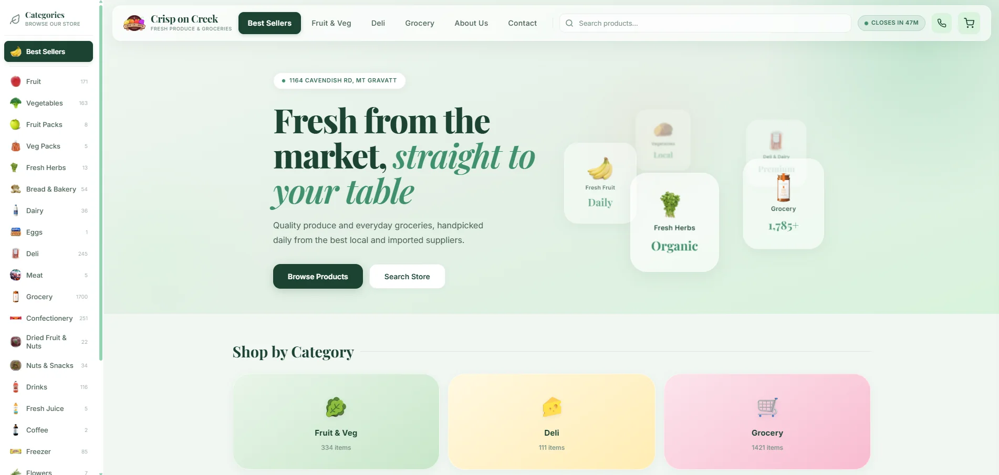
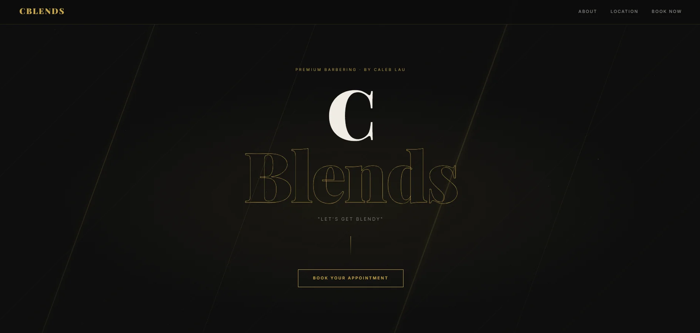
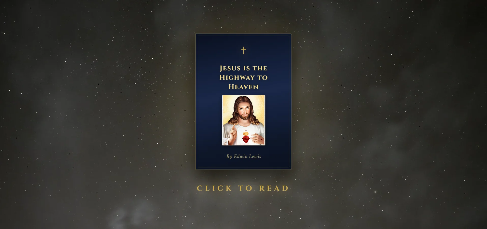

Online store / Mt Gravatt East
Crisp on Creek
A website for a local grocer, with products and pricing connected to its MCPOS system. Customers can browse the range and place an order online.
Visit Crisp on Creek ↗Matthias Campbell / Web design, Brisbane
I design and build websites for small businesses. That might be a place to explain your services, take bookings, or sell products online.
You work with me on the design and the build. Here are a few examples of what that can look like.
Designed and built by Matthias Campbell

Online store / Mt Gravatt East
A website for a local grocer, with products and pricing connected to its MCPOS system. Customers can browse the range and place an order online.
Visit Crisp on Creek ↗
Barber / Runcorn
A website for Caleb Lau's barbering business. Customers can find the location, choose a service and book an appointment through MCBook.
Visit CBlends ↗
Author / Personal website
A home for Edwin's autobiography and audio recordings, with chapters to read online and photographs from his life.
Visit Edwin's website ↗What I can help with
Some businesses need a few useful pages and a contact form. Others need bookings, a product catalogue, or a connection to their existing software. We can work out the scope together.
Page layouts, mobile design, your business information and the forms or links customers need to contact you.
A clearer layout, updated content, mobile fixes or a rebuild. Send me the current address and tell me what is getting in the way.
Online appointments, product browsing and connections to other software. The CBlends and Crisp on Creek sites above show two examples.
Working together
We talk about your business, the pages you need and any features you have in mind. I'll use that to put together a quote.
You see the layout and content as the site takes shape, so there is time to discuss changes before it goes live.
We check the pages, links and forms on desktop and mobile, then arrange the domain and hosting details for launch.
Search engine optimisation
SEO is part of looking after a website. I can review an existing site or include the initial setup in a new build.
For ongoing SEO work, we'll agree on the changes and reporting you need. Search rankings depend on several factors, so I don't guarantee a particular position.
Tell me about your project
Send your current website, if you have one, and a few words about what you need. Examples of sites you like are useful too.
It depends on the number of pages, the content and any custom features. Once we've discussed those, I can give you a quote for the work.
Send me the address and let me know what you'd like changed. I'll look at how it is built before recommending an update or a rebuild.
Your business details, logo, photos and any text you already have are a useful start. If something is missing, we can discuss what is needed when we plan the site.